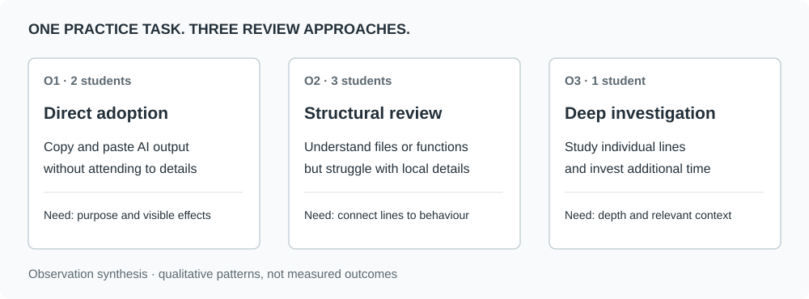
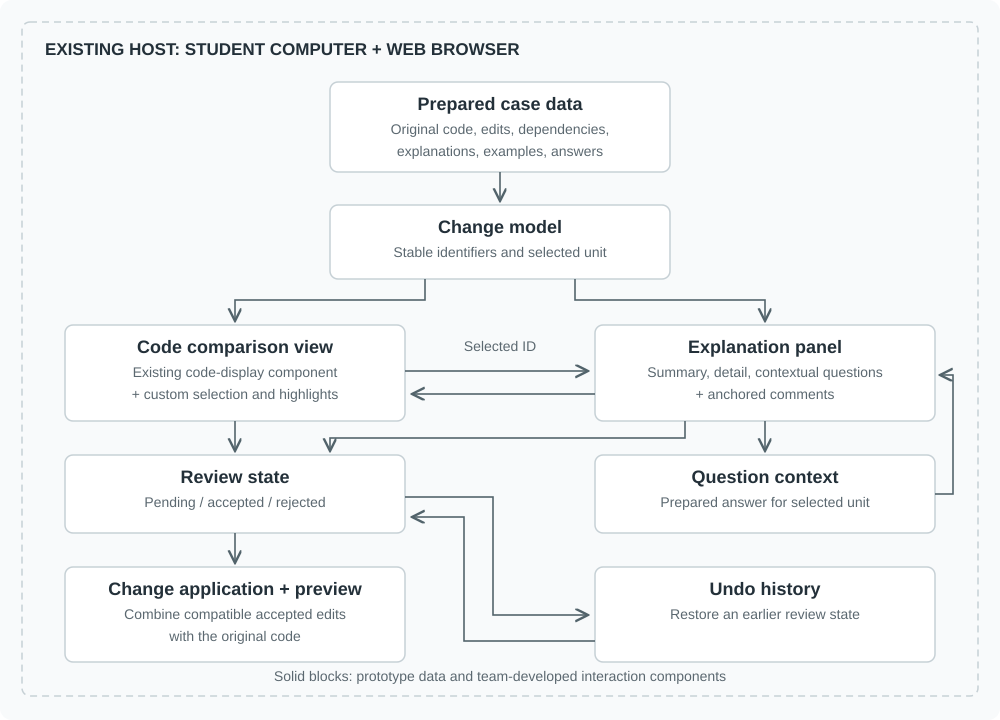
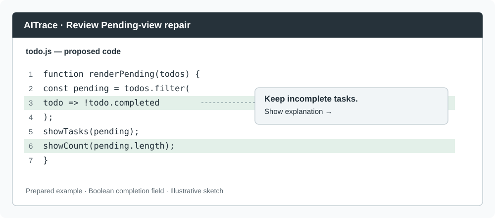
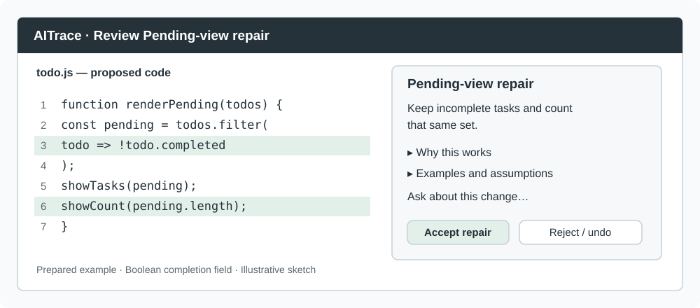
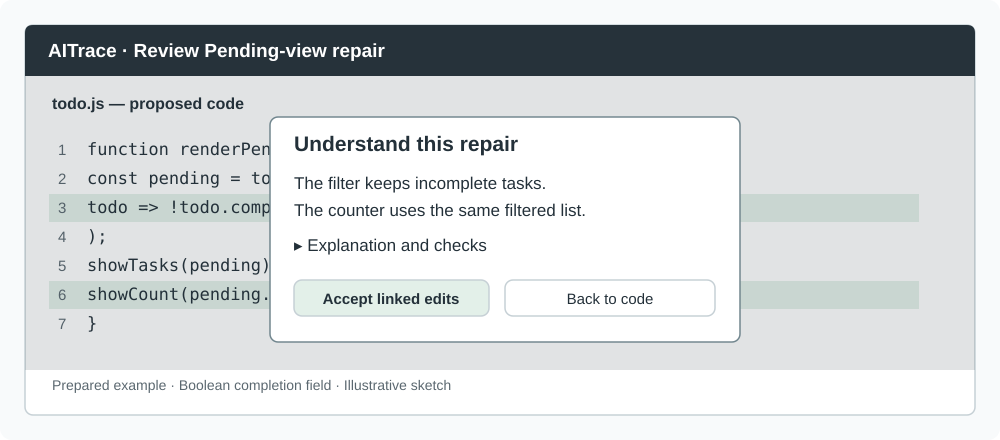

Observation and Proposal
AITrace helps students understand AI-generated changes to existing code before deciding whether to accept them. It links each meaningful change to a short explanation, its behavioural effects, and optional detail. Students can review the affected code, ask a contextual question, and accept or reject a suggestion without losing the connection between explanation and implementation.
This proposal is grounded in observations of six students completing a To-do List project task supplied by our team. We identified three approaches: directly adopting AI output, understanding the overall program while struggling with local details, and investigating code line by line. These differences inform our personas and a design that supports different depths of explanation.
Observing Users
We conducted Zoom observations on September 28, 2026, beginning at 3:00 p.m., with an average observation duration of approximately 30 minutes per participant. Six student participants, approximately 20 years old and not all enrolled at McGill, joined voluntarily through invitations to friends. Participants were informed about recording and the use of anonymized findings in the course report and gave their consent.
Participants worked with AI to build a To-do List project from scratch. The common requirements were task creation, reading, updating, and deletion (CRUD), simple simulated database management, and a display of the tasks. They freely selected their AI tool: three used GPT, two used Gemini, and one used Claude. We provided no help during the task. Zoom recordings and written notes documented the activity and the subsequent questions.
After the task, we asked participants to explain the project as a whole, then examined a specific operation, such as adding or deleting a task. We asked about the role of a particular line within its function. This progression allowed us to distinguish an understanding of what the application does from an understanding of how its implementation works.
Direct adoption (O1). Two students without programming knowledge copied and pasted generated code without attending to implementation details. During follow-up questioning, they could describe what the application did but could not explain how it was implemented. When asked to make simple tweaks, they could not locate the relevant project files or carry out the requested changes. Obtaining a working application did not give them enough understanding to navigate and modify its code.
Structural review (O2). Three students with programming knowledge could explain files or functions but sometimes struggled with unfamiliar built-in functions or data structures. For one participant, questions about functions established an understanding of their general purpose, while questions about various imported objects revealed gaps in understanding their roles. In an assigned follow-up extension task, this participant was unable to implement alternating colours for the To-do List rows. This episode showed a gap between describing the program at a broad level and modifying its implementation for a specific requirement.
Detailed investigation (O3). One student investigated code line by line and could clearly explain almost all the material discussed in follow-up questioning. When asked how they would implement simple to moderate extensions, such as changing row colours or adding features, they could quickly identify and explain where they would modify the code; this demonstrated an understanding of where changes belonged, rather than establishing successful implementation of every extension. During the activity, we observed that they sometimes wrote large code segments themselves instead of adopting extensive AI output. In the follow-up interview, they explained that large generated responses took too long to comprehend and that writing those segments themselves felt more productive. This suggests a need for manageable review units as well as access to detailed explanations.
The shared task gave these observations a common activity context. This was an assigned practice activity, and the findings are qualitative. Differences in tool choice and prior knowledge mean that we do not attribute the observed differences to a particular AI system or infer their prevalence in the wider student population.
Observation Grid
| Category | Details |
|---|---|
| Observation site and time | Zoom observations, September 28, 2026, beginning at 3:00 p.m.; approximately 30 minutes per participant on average. |
| Participants and recruitment | Six students aged approximately 20, not all from McGill, recruited voluntarily through friends. |
| Activity | Build a To-do List project from scratch in collaboration with AI: task CRUD, simple simulated database management, and task display. |
| AI tools | Free choice: GPT (3 participants), Gemini (2), Claude (1). |
| Observation procedure | No assistance during the activity; follow-up questions moved from the whole project to a specific operation, function, and line of code. |
| Documentation and consent | Zoom recording and written notes; participants were informed and consented to recording and anonymized course reporting. |
| Direct adoption (O1) | Two students adopted output without attending to details and could explain the application's purpose, but not its implementation. |
| Structural review (O2) | Three students could explain files or functions but struggled with unfamiliar built-in functions or data structures. |
| Detailed investigation (O3) | One student studied individual lines and clearly explained almost all the material discussed afterward. |
Table 1. Observation grid for the To-do List practice activity.
Identifying the Problem
The interaction problem is the effort required to connect extensive AI-generated code with lengthy explanations. Responses presented substantial amounts of both, leaving participants to identify which explanation applied to which part of the implementation. Understanding the application's overall purpose did not necessarily help them interpret a particular expression or identify where to make a requested change.
The three review approaches revealed different responses to this difficulty. Direct Adopters did not attempt to comprehend the implementation and reported that the amount of code was overwhelming. Structural Reviewers often let AI generate most of the implementation, then moved toward the next feature, skipping verbose explanations whose connections to particular code sections were difficult to follow. The Deep Investigator inspected the generated code, but reported that requesting a summary could produce another lengthy response that still took substantial effort to process. Writing large segments themselves sometimes felt more productive because it helped them understand the implementation as they worked.
The design opportunity is to make the relationship between code and explanation easier to follow. AITrace will organize proposed changes into smaller meaningful review units and attach each explanation directly to its affected code. A short initial explanation with optional detail will let students investigate one change at a time while keeping its context visible. This is intended to help them connect a change to its purpose and behavioural consequences before deciding whether to accept it.
Design question: How can an interface help students connect an AI code change to its meaning and consequences before accepting it, while supporting different depths of investigation?

Developing Personas
We developed task-based audience segments from how participants adopted, interpreted, and modified AI-generated code. First, we listed behaviours from the observations and follow-up interviews. We then organized those behaviours by task and compared the participants' approaches to identify recurring needs. Finally, we used those patterns to define three audience segments. Programming knowledge and investigative effort were considered separately, since willingness to study every line is not itself a measure of proficiency.
Distinguishing Behaviours
- Copying generated code without inspecting implementation details and being unable to locate files for simple requested tweaks (O1).
- Reporting that the amount of generated code discouraged attempts to understand it (O1).
- Explaining the general purpose of files or functions while struggling with unfamiliar operations, data structures, or imported objects (O2).
- Moving toward the next feature and skipping lengthy explanations whose connections to the code were difficult to follow (O2).
- For one participant, being unable to implement alternating To-do List row colours in a follow-up task (O2).
- Investigating code line by line and quickly explaining where requested extensions would require changes (O3).
- Sometimes writing large segments independently and reporting that processing extensive AI code and explanations could feel less productive (O3).
User Behaviours Organized by Task
| Task area | Observed behaviour | Inferred need |
|---|---|---|
| Adopt AI output | Direct copy-and-paste without attention to details (O1). | A manageable starting point, plain-language purpose, and observable examples. |
| Understand project structure | Understanding files and sometimes functions (O2). | Connect local changes to their surrounding function and task. |
| Interpret a local implementation | Difficulty explaining unfamiliar operations or imported objects; skipping lengthy explanations that are difficult to connect to code (O2). | A short explanation attached to the relevant expression, with an example of its behavioural effect. |
| Locate and make a modification | Difficulty locating relevant files (O1); one unsuccessful row-colour extension (O2); quickly explaining where to modify the code (O3). | Visible code context and clear links between a requested behaviour and the implementation it affects. |
| Investigate and learn | Line-by-line investigation, sometimes followed by writing large segments independently; reported difficulty processing extensive AI responses (O3). | Smaller review units, concise initial explanations, and optional detail or contextual questions. |
Table 2. Intermediate organization of behaviours into task areas and needs.
Tasks and Performers
We compared the recorded approaches before assigning persona names. The table below retains the observation references and sample sizes, including cases where a finding concerned only one participant. These observations support tentative segments for this activity; they do not establish fixed categories for all students.
| Task | O1: two participants | O2: three participants | O3: one participant |
|---|---|---|---|
| Review generated output | Copied code without attending to implementation details. | Often moved toward the next feature and skipped lengthy explanations. | Investigated individual lines; sometimes wrote large segments independently. |
| Explain the implementation | Described the application's purpose but could not explain its implementation. | Explained files or functions but struggled with unfamiliar local details. One participant could not explain various imported objects. | Clearly explained almost all the code discussed in follow-up questioning. |
| Respond to a requested extension | Could not locate relevant files or carry out simple requested tweaks. | One participant was unable to implement alternating row colours. | Quickly explained where changes would be needed; implementation success was not established for every extension. |
| Describe the difficulty of reviewing AI output | Reported that the amount of code was overwhelming. | Observed skipping of verbose explanations whose connections to code were difficult to follow. | Reported that processing lengthy code and summaries could take more effort than writing the code themselves. |
Table 3. Comparison of task performance and reported difficulties across the observation groups.
This comparison suggested three different needs: help entering and navigating an unfamiliar implementation, help connecting local code to behaviour within a broadly understood program, and support for detailed investigation without presenting everything at once. We named the resulting segments the Direct Adopter, Structural Reviewer, and Deep Investigator. All three encountered extensive output, but differed in how they approached it and what support they needed.
Definition of Personas
| Persona | Observation basis | Task goal | Design response |
|---|---|---|---|
| The Direct Adopter | O1, two students | Use AI output to make progress. | Small review units, plain-language purpose, visible code context, and examples. |
| The Structural Reviewer | O2, three students | Understand local changes within a familiar structure. | Linked code and explanation, consequences, and review controls. |
| The Deep Investigator | O3, one student | Understand and modify code without spending excessive effort processing AI output. | Manageable review units, concise summaries, and optional assumptions, alternatives, and questions. |
Table 4. Personas derived from the observations. These are composite segments, not invented participant biographies.
User Personas
The Direct Adopter. This student uses generated code to make progress but has little programming knowledge and finds the volume of output overwhelming. In our observations, students following this approach could describe the application but could not locate relevant files or make simple requested tweaks. AITrace should provide a small, clearly located review unit, explain its purpose in plain language, and show a concrete behavioural example. The initial goal is understanding purpose and visible consequences; a short explanation does not establish correctness or replace programming knowledge.
The Structural Reviewer. This student understands the general purpose of files or functions but has difficulty connecting unfamiliar local details to program behaviour. Participants following this approach skipped lengthy explanations while moving toward the next feature, and one struggled to implement alternating row colours. AITrace should keep the relevant code and its explanation visible together, connect unfamiliar operations to concrete effects, and offer contextual questions. This supports reviewing a specific change within a program the student broadly understands.
The Deep Investigator. This student investigates code closely and can explain where requested modifications belong. The observed participant sometimes preferred writing large segments independently because processing extensive AI output felt less productive. AITrace should present manageable review units with concise initial explanations, while allowing deeper investigation through examples, assumptions, alternatives, and questions. More detail should be available when requested rather than displayed all at once. One participant exemplified this approach in our sample.
Our Primary Persona: The Structural Reviewer
We focus on this persona because they have enough programming knowledge to act on an explanation while showing a specific difficulty: connecting a small implementation to its effect. This group also has the largest representation in our exploratory sample, although that does not imply population prevalence. The other personas guide accessible summaries and optional depth.
Our Solution
AITrace organizes a suggestion into meaningful review units, such as correcting a filter. Each unit has an anchored comment next to the affected code and a card in a persistent explanation panel. Selecting a card highlights its code; selecting changed code reveals its explanation. The original and proposed versions remain visible together.
A summary states what changed and why. An expanded explanation connects implementation to behaviour through an example. Further exploration provides assumptions, side effects, alternatives, and contextual questions. Users choose their depth without first identifying a skill category.
Review units support acceptance, rejection, and undo, with pending, accepted, and rejected states. Edits that must work together are grouped in prepared cases to prevent incompatible partial acceptance. The final-code preview reflects the decisions.
Explanations, proposed checks, and executed results are labelled separately. An explanation describes a reason for a change; it does not certify correctness.
Comparing the Products
AITrace makes the relationship between a proposed change and its explanation explicit during review. It divides a suggestion into meaningful code portions and displays a short explanation directly alongside the selected portion. Students can inspect its purpose and behavioural effects, then reveal additional detail without searching through a separate response. For the Structural Reviewer, the expected advantage is less effort locating an unfamiliar expression and connecting it to an explanation within a program they broadly understand. This is a proposed benefit to evaluate, rather than an established improvement over every related product.
| Alternative | Existing capability | Potential review difficulty | AITrace's proposed distinction |
|---|---|---|---|
| Observed chatbot workflow | Generated code and explanations in conversational responses. | Lengthy responses require students to locate code and associate it with the relevant explanation. | Smaller review units with explanations displayed alongside the selected code and explicit decisions. |
| Copilot Chat | Explanations and contextual questions. | Students must formulate contextual questions and interpret the response in relation to a particular edit. | A consistent card with purpose, effects, examples, and questions. |
| VS Code AI edit review | Differences and granular keep/undo controls. | Seeing and controlling an edit does not itself explain an unfamiliar expression's behavioural effect. | Behavioural explanation beside decision controls. |
| Cursor review | Conversational Agent interaction, diff review, rejection, and checkpoint restoration. | When explanations are lengthy, relating conversational detail to particular edits can require searching across the response and diff. | Short explanations attached to meaningful code portions, with optional detail. |
| Claude Code | Terminal diff review; IDE integration with contextual questions and proposed-edit review. | Interpreting a diff's behavioural consequences can require follow-up questions and associating responses with code. | Prepared purpose and behavioural examples for each review unit, available beside its code. |
Table 5. Capability-based comparison. Documentation supports capabilities; comparative usability and learning benefits remain to be evaluated.
Key Distinctions
Linked code and explanation. The selected modification, its context, and its explanation stay visible together. This makes their correspondence explicit and is intended to reduce searching and the effort of matching a separate explanation to code.
Progressive depth. Each review unit begins with a short explanation. Users can reveal examples, local behaviour, assumptions, and alternatives as needed, rather than processing all the detail in one lengthy response.
Behaviour-oriented units. Linked edits are grouped by the problem they address, with their relationship explained.
Understanding as an evaluation target. We assess users' explanations and decisions alongside usability, rather than inferring understanding from acceptance or preference.
Illustrating a Use-case Scenario
This is a proposed interaction for the Structural Reviewer. Its bugs and AI response are prepared examples, not reported observation events.
A student understands a To-do List project's input, task list, and display function, but the Pending view shows completed tasks and its counter is inconsistent. An AI suggestion changes a filter, updates the remaining-task counter, and renames a variable.
AITrace presents the filter and counter edits as one repair unit, with renaming separate. The student selects the repair. The system highlights both expressions and explains that the Pending view should retain incomplete tasks and count that same set.
The student expands the explanation of !todo.completed. The panel shows an incomplete task being retained and a completed task excluded, assuming completed is Boolean. This connects the expression to visible list behaviour.
The student asks, “Why does the counter also change?” The answer stays attached to the repair and explains that counting all tasks would disagree with the filtered view. The student accepts the repair and rejects renaming. The preview updates and displays both decisions.
Before finishing, the student opens checks for mixed completion states, an empty list, and all tasks completed. Outcomes are labelled as illustrations or executed results. They can revisit the repair or undo the decision. The intended outcome is an informed choice; whether participants achieve it will be evaluated.
Designing at a High Level

The prototype runs in a browser on a student's computer. Prepared data contains original code, defined edits, explanations, dependencies, examples, and follow-up answers. Stable identifiers connect these in a change model. The comparison view and explanation panel share a selected identifier, keeping code and commentary synchronized.
Review decisions update state. A change-application component combines compatible accepted edits with the original code to generate a preview. Undo restores an earlier state. Contextual questions retrieve prepared answers for the selected unit.
We reuse HTML, CSS, JavaScript, and a selected code-display or difference component. We develop the case format, linked explanations, review controls, state, case-specific dependency checks, preview, and undo. A live model API, arbitrary code execution, and automatic whole-project dependency discovery are outside initial scope. Prepared content supports evaluation of the interaction.
Initial Sketches
Sketch 1: Anchored Comments

This keeps commentary close to code, but long comments may interrupt reading. We will examine discoverability and clutter.
Sketch 2: Persistent Explanation Panel

This is our initial preferred layout. It offers a summary, expandable detail, and contextual questions while retaining the code. Testing will examine the code-card relationship and usability on smaller screens.
Sketch 3: Change-specific Floating Window

The window makes review explicit, but may obscure code or interrupt exploration. We will compare it with the side panel. All sketches are proposed alternatives, not completed study findings.
Justifying Feasibility
Our three-member team has HTML, CSS, JavaScript, and Java skills, along with Git collaboration, web-project development, and interface-design experience. HTML, CSS, and JavaScript support the browser interface; Java contributes programming experience for reviewing implementation logic. Our web and interface experience supports translating the sketches into a usable prototype, while Git supports collaborative development. A small set of To-do List cases, prepared responses, and conventional components keeps the prototype manageable.
We propose 75 team hours, or approximately 25 per member, within the course guideline of 20–30 hours each. The estimate is organized into three workstreams.
| Workstream | Work allocation | Hours |
|---|---|---|
| Interface | Layout (5), comparison and explanation interface (11), styling/integration (4), report (3). | 23 |
| Review logic | State, linked edits, preview, undo (11), case data (5), integration checks (4), report (3). | 23 |
| Research | Observations/personas (6), explanation review (4), study preparation and evaluation (16), report (3). | 29 |
| Total | Shared coordination is included. | 75 |
Table 6. Proposed effort allocation.
The workstreams will be shared across the three members. The study estimate includes eight team hours for six individual 40-minute sessions attended by a moderator and an observer, plus eight hours for preparation and analysis. Responsibilities can be balanced to keep individual effort near 25 hours.
Misaligned explanations, incompatible edits, and information overload are the main implementation risks. Stable identifiers, explicit prepared-case dependencies, and optional detail address these. The prepared-case scope allows the team to focus its front-end and programming skills on the review interaction and its evaluation.
Evaluating HCI Quality
For the next deliverable, we plan six individual Zoom testing sessions, each lasting approximately 40 minutes. We aim to include two Direct Adopters, two Structural Reviewers, and two Deep Investigators across the study. Participants will be approximately 20 years old, recruited voluntarily through friends or campus channels, without gender restrictions or additional screening conditions beyond the stated audience characteristics.
Every participant will experience both a conventional AI-answer display and the low-fidelity AITrace interface, using different but similarly difficult To-do List modification cases. Three participants will start with the conventional display, and three with AITrace. The two participants representing each review approach will use opposite orders. Matched cases and varied order will help limit learning and order effects; with six participants, we will focus on descriptive comparisons and design difficulties rather than population-level conclusions.
Low-fidelity testing will examine whether participants can find changes, associate explanations, navigate detail, and understand review controls. After each condition, we will ask them to explain a change's purpose and behaviour, indicate which suggestions they would accept, and identify a useful check. Zoom recordings and written notes will document the interaction and answers. Each approximately 40-minute session will include consent and instructions, both task conditions, an opportunity for a break, and a debrief.
| Question | Proposed measure |
|---|---|
| Can users locate changes? | Correct identification of affected code. |
| Do users understand effects? | Explanation of purpose and behavioural consequences in their own words. |
| Can users decide appropriately? | Decisions judged against stated task requirements. |
| Can users identify checks? | Relevant inputs or boundary conditions. |
| Is interaction manageable? | Navigation difficulties, completion time, and reported effort. |
| Is confidence supported? | Confidence compared with demonstrated understanding and decision quality. |
Table 7. Proposed evaluation criteria; no outcomes are claimed.
Direct adopters will be assessed on purpose and visible consequences, Structural Reviewers on local behaviour and decisions, and Deep Investigators on access to useful detail. Faster completion is secondary and must not come at the expense of understanding.
Ethics Table for HCI
The following ethics table outlines the proposed low-fidelity prototype study for the next deliverable. Its planned participants are separate from the six students already observed.
| Required field | Proposed study information |
|---|---|
| Group / student names | Group A: Eric Lu, Antony Hu, Zuojun Gu. |
| Title | AITrace: Understanding AI Code Changes Before Accepting Them. |
| Study description | We will compare a low-fidelity AITrace interface with a conventional AI-answer display using prepared To-do List modification cases. Every participant will use both displays and explain the changes and their review decisions, with presentation order balanced across participants. Six individual Zoom sessions of approximately 40 minutes each will be documented through recordings and written notes to identify comprehension and interaction difficulties. |
| Participants | Six new student participants aged approximately 20, with recruitment open to all genders. Each participant will attend one individual Zoom session lasting approximately 40 minutes. We aim to include two Direct Adopters, two Structural Reviewers, and two Deep Investigators; there are no additional screening conditions beyond these audience characteristics. |
| Recruitment | Voluntary invitations through friends or campus channels. The invitation will explain the study, both display conditions, the recording, and the approximately 40-minute duration of each individual session. |
| Risks | Discomfort about programming ability, fatigue or frustration during an approximately 40-minute session, and privacy concerns associated with recording names, voices, or screens. |
| Mitigation | Explain that the interface is being evaluated; allow skipping, breaks, and withdrawal. Use prepared examples rather than private assignments and obtain informed consent for Zoom recording and anonymized reporting. Keep recordings and written notes in an access-restricted team folder accessible only to Eric Lu, Antony Hu, and Zuojun Gu. Use P1–P6 identifiers in study notes and obscure identifying information in report screenshots. Delete original recordings and identifiable records within 30 days after course grades are released. |
Table 8. Ethics information for the proposed low-fidelity study.
References
- GitHub. Quickstart for using GitHub Copilot in your IDE.
- Visual Studio Code. Review and revert agent changes.
- Cursor. Agent mode.
- Anthropic. Claude Code: Interactive mode and diff review.
- Anthropic. Use Claude Code in VS Code.